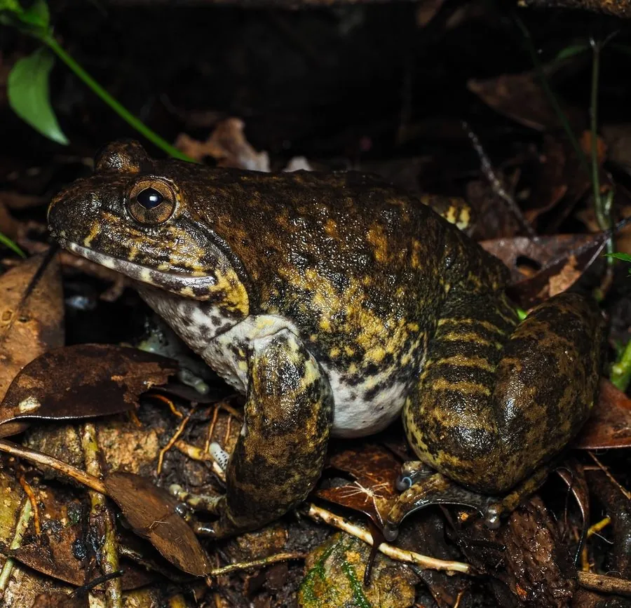

两栖动物 · 动物界
棘胸蛙 Quasipaa spinosa

中国南方山区的食用蛙类，成年雄蛙胸部有黑色角质棘刺，肉质鲜美，曾被大量捕捉，现被列入“三有”名录。
- 分类
- 门脊索动物门纲两栖纲目无尾目科叉舌蛙科属棘蛙属
- 栖息环境
- 山地溪流、水潭、阴湿岩壁与林下石缝
- 地理分布
- 中国南方山地及越南北部
- 保护级别
- IUCN 易危（VU）；中国“三有”保护动物
物种志
棘胸蛙体长 8–12 厘米，雌蛙大于雄蛙，头部宽扁，吻端钝圆，背部皮肤粗糙并布满疣粒，体色呈黄褐、灰褐或暗褐色，四肢有深色横纹；繁殖期雄蛙胸部会长出黑色角质棘刺，用手指触摸有明显的刺感，“棘胸蛙”之名由此而来。
它分布于中国南方山地以及越南北部，栖息于海拔较高的山溪、水潭和阴湿岩壁附近，夜间捕食昆虫、溪蟹、小鱼、蚯蚓和其他小型蛙类。每年 5–9 月繁殖，雌蛙在溪流中产卵约 1000 枚，卵附着在石缝或水草上，蝌蚪在水中生活数月后变态。它因肉质细嫩被视为“山珍”，被大量捕捉，加上溪流污染和栖息地破坏，野生种群数量下降；它已被列入中国“三有”保护动物名录，并开展了人工养殖以满足市场需求。
形态与习性
- 食性昆虫、溪蟹、小鱼、蚯蚓和小型蛙类
- 体长8–12 cm，雌蛙较大
- 体重约 100–300 g
- 寿命约 5–8 年
- 繁殖卵生，每次约 1000 枚，蝌蚪水中生活数月
- 活动节律夜行性，白天藏在溪边石缝
- 特征繁殖期雄蛙胸部有黑色角质棘刺
趣味知识
- 棘胸蛙的雄蛙在繁殖期会长出黑色角质棘刺，摸起来扎手。
- 它肉质鲜美，民间称“石蛙”，曾被大量捕捉作为野味。
- 棘胸蛙已被列入“三有”保护动物名录，人工养殖产业逐渐兴起。